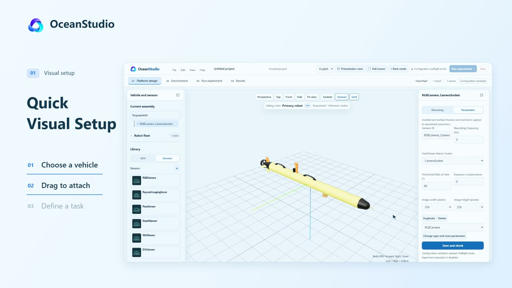
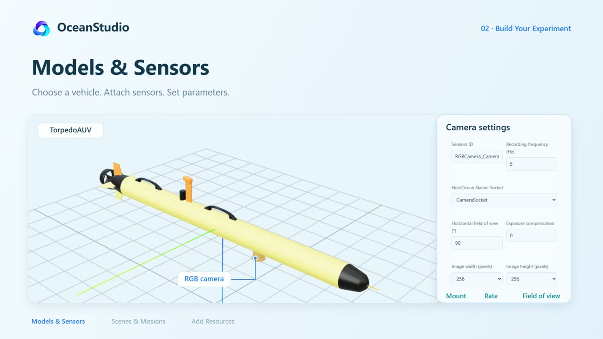

Work visually
Browser workspace
Select a vehicle, attach sensors, inspect the scene, and refine the experiment in context.
A shared workspace where researchers and AI agents compose underwater experiments, evaluate algorithms, and turn each run into the next iteration.
Project preview · Platform source release planned
Build the experiment around the research question. Configure the vehicle, its sensing and dynamics, the water around it, and the task it needs to complete.

Configure AUV and ROV experiments with independent initial states, sensors, physical parameters, and controllers for each robot.
Design experiments visually or operate the same platform through LLM agents. Both paths use shared experiment configurations and validation.

Select a vehicle, attach sensors, inspect the scene, and refine the experiment in context.
Configure an AUV with depth and sonar sensing. Compare candidate controllers on an S-shaped path under the same current and evaluation criteria.
Extend scenes, sensor models, and control algorithms through explicit interfaces. Namespaced plugins let new implementations coexist with existing ones.
Native axis-controller plugins can enter supported native tasks after review and explicit activation. Reference sensors, kinematics, and hydrodynamic plugins retain their own runtime requirements.
Turn a research objective into an experiment loop. An agent proposes algorithms and parameters, tests candidates in simulation, evaluates the evidence, and revises the next iteration.
Keep the task fixed. Make each revision explicit. Learn from the recorded result.
See the loop in the filmA candidate algorithm and experiment configuration
Simulation under controlled task and environment conditions
Recorded trajectories, errors, and independent task metrics
A new algorithm or parameter proposal for the next trial
Current development scope includes bounded controller studies and reviewed plugin extensions. The film illustrates the iteration workflow; it does not establish a new optimization result.
This is the public project preview. Platform source code and installation packages have not been released. Release updates will be announced on GitHub.